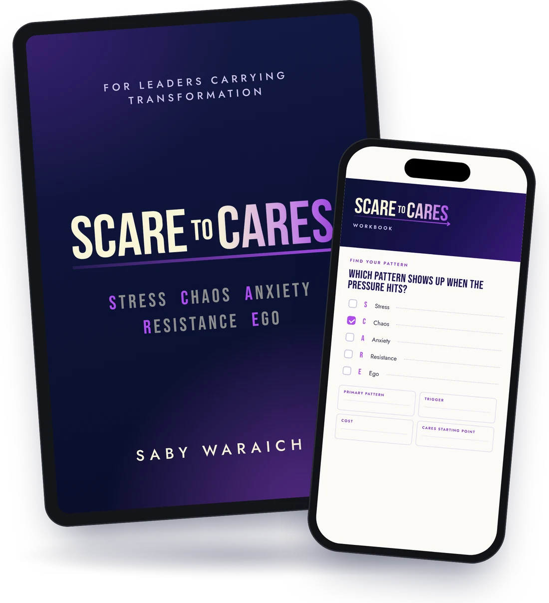

Scare to CaresWorkbook
01 · Find your pattern
Which pattern shows up when the pressure hits?
- SStress
- CChaos
- AAnxiety
- RResistance
- EEgo
$27For CIOs, CISOs & Transformation Leaders
Discover the 5 leadership shifts that help you move from constant oversight to greater trust, stronger accountability, and more confident teams.
$27, instant access30-day money-back guarantee

Digital book Guided workbookThe book + workbook
Get the Scare to Cares digital book + guided workbook to identify the leadership shift to make first.
$27, instant access30-day money-back guarantee
The real problem
That may be exactly what's making it worse.
Stakeholders want answers, and the safest move feels like taking more control.
Instead of deciding, they ask: "What does the leader want us to do?"
Trust gets thinner, and people stop telling leadership what it needs to hear.
The person carrying the most responsibility ends up carrying even more.
The Scare to Cares framework
SCARE feels safe because, in the moment, it looks like leadership. CARES gives you another response for each pattern.
Tap to flip all five
Stress
Pressure starts driving the response, because another failure feels unacceptable.
Chaos
More meetings. Fewer honest conversations.
Anxiety
You solve for immediate relief instead of the long-term outcome.
Resistance
Relationships turn transactional and people stop telling you what you need to hear.
Ego
You delegate the work without truly delegating the decisions.
$27, instant access30-day money-back guarantee
01 · Find your pattern
Which pattern shows up when the pressure hits?
02 · Your trigger
What makes you tighten control, react, withdraw or over-manage?
03 · The cost
Where is it slowing decisions or making you the bottleneck?
04 · Your starting point
Which CARES behavior will you change first?
Swipe through the four exercises
Inside the workbook
Four exercises, applied to the transformation already on your desk. By the time you finish, you'll know:
The SCARE patterns, the CARES alternative, and why transformations fail even when the technology is sound.
Four exercises: your primary SCARE pattern, your trigger, the cost, your CARES starting point.
Available right after purchase. Start the diagnostic today.
Total value $51 · one payment
Instant digital access30-day money-back guarantee
If it doesn't help you see the pattern affecting your project, ask for a refund within 30 days of purchase and you'll get the full $27 back.
No. Scare to Cares is a digital book with a guided fill-in workbook, available right after purchase.
It works best with one. The workbook asks you to apply each idea to the transformation already on your desk.
Four exercises: your primary SCARE pattern, your trigger, the cost, and your CARES starting point.
No. It's about what you do as a leader when the pressure is on, not scheduling, tools or delivery frameworks.
Ask for a refund within 30 days of purchase and you'll get the full $27 back.